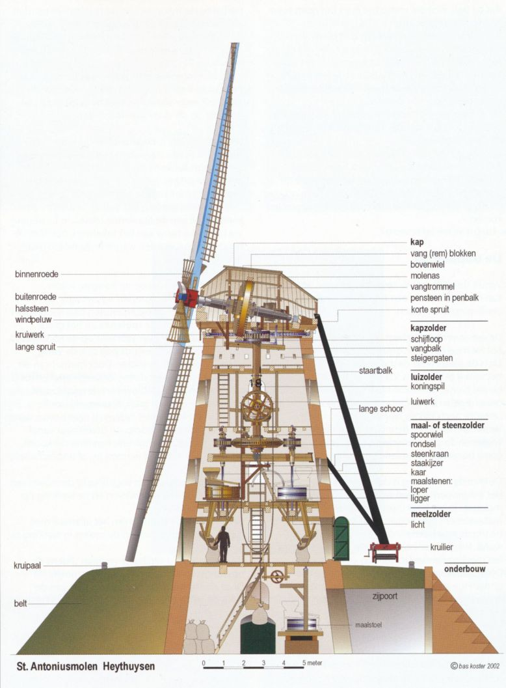

In Nederland staan meer dan duizend oude windmolens.
De wind blaast tegen de wieken die daardoor gaan draaien.
Molens deden vroeger heel veel werk.
Het belangrijkste was het pompen van water uit laaggelegen
gebieden.
Het drooggepompte land wordt een polder genoemd.
Deze poldermolens zijn nog een symbool voor de Nederlandse strijd
tegen het water.
Een watermolen wordt aangedreven door stromend water van een beek of
rivier.
Je vindt ze nog in het oosten en zuiden van Nederland.
Het water stroomt tegen een waterrad dat daardoor gaat draaien.

|

|
|
Molens werden gebruikt voor
het malen van graan tot meel (korenmolen),
het persen van olie uit zaden (oliemolen),
het zagen van boomstammen tot houten planken (zaagmolen).
Sommige molens zijn nog steeds in gebruik.
Moderne molens worden gebruikt voor het opwekken van elektriciteit.
We noemen ze windturbines.
Windturbines staan vaak bij elkaar in een windmolenpark.
Grote windmolenparken worden op zee gebouwd.
|
|